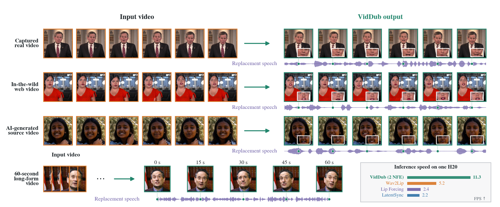
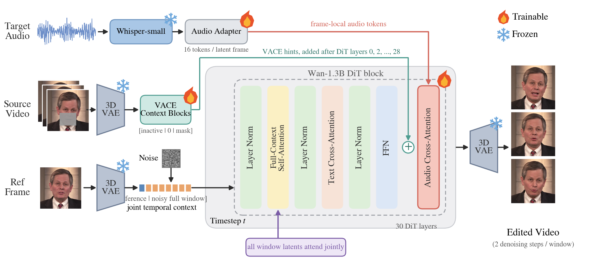
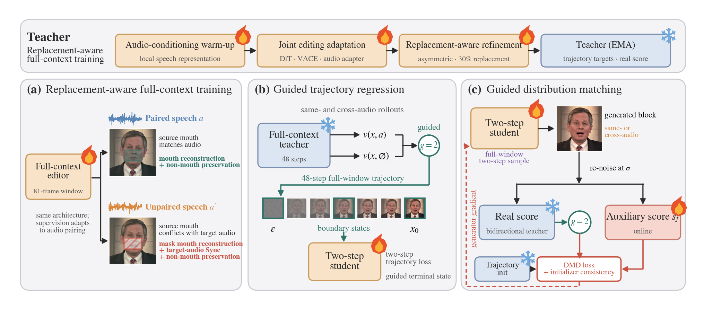
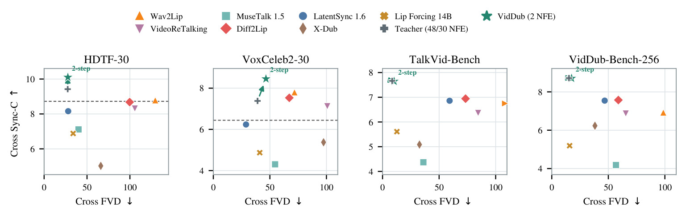

A full-context diffusion editor that learns from replacement speech and generates synchronized, source-preserving video in two denoising steps.

VidDub edits captured, web, generated, and 60-second videos with replacement speech. It reaches 11.3 FPS on one H20 with two denoising steps.
Video dubbing aims to synthesize lip movements that match target speech while preserving the identity, head pose, and background of a source video. Existing editors are predominantly trained through self-reconstruction with the original paired audio, although the recorded mouth conflicts with the desired articulation after speech replacement. VidDub introduces replacement-aware cross-audio supervision: paired-audio samples retain full-frame reconstruction, while unpaired samples mask source-mouth reconstruction and use audio–visual synchronization to supervise articulation, with spatial reconstruction preserving the remaining content. A full-context teacher learns this objective before matched trajectory regression transfers its guided trajectories to a two-step student; distribution matching distillation then restores visual quality after compression. We will release 85,435 curated training clips, VidDub-Bench, fixed evaluation manifests, preprocessing outputs, and unified evaluation code. Across three training seeds, removing conflicting source-mouth reconstruction improves replacement-audio Sync-C by 0.833±0.040, and the final model combines strong synchronization with visual quality, identity preservation, and visual-speech recognition across four benchmarks.
VidDub first removes conflicting source-mouth reconstruction under replacement speech, then compresses the resulting full-context teacher into a two-step full-context student.

Source and reference features preserve appearance, frame-local audio controls articulation, and bidirectional attention jointly models the complete 81-frame window.

Replacement-aware full-context training, matched trajectory regression, and guided distribution matching distillation. Auxiliary score networks are used only during training.
Complete cross-audio summary across captured, web, and generated sources. Each cell is Sync-C↑ / FVD↓; results use each method’s scoreable subset, with coverage audited separately.
| Method | NFE | HDTF-30 | VoxCeleb2-30 | TalkVid-500 | VDB-256 |
|---|---|---|---|---|---|
| Wav2Lip | 1 | 8.782 / 129.51 | 7.800 / 71.73 | 6.750 / 111.19 | 6.922 / 98.62 |
| Diff2Lip | 25 | 8.680 / 99.70 | 7.533 / 67.15 | 6.944 / 73.37 | 7.575 / 58.87 |
| LatentSync 1.6 | 20 | 8.160 / 28.05 | 6.239 / 28.89 | 6.860 / 59.27 | 7.544 / 46.77 |
| Lip Forcing | 2 | 6.884 / 33.80 | 4.871 / 41.03 | 5.610 / 12.68 | 5.192 / 15.78 |
| Full-context teacher | 30/30/48 | 9.422 / 27.49 | 7.382 / 39.11 | 7.663 / 8.51 | 8.718 / 15.23 |
| VidDub | 2 | 10.102 / 27.66 | 8.454 / 46.52 | 7.646 / 10.25 | 8.709 / 17.50 |
Swipe horizontally on small screens. VDB is the source-disjoint VidDub-Bench. TalkVid success ranges from 402/500 to 500/500; its all-method common intersection has 308 items. Full coverage, Sync-D, confidence intervals, VSR, preservation, and human evaluation are reported in the paper.

Replacement-audio synchronization and distribution quality across four benchmarks; complete metrics and coverage are reported in the paper.
Six matched examples from each of four benchmarks. Every row fixes both the reference video and replacement-speech input across methods; these examples complement—not replace—the frozen aggregate metrics above.
The page separates the source of replacement control from the role of few-step quality recovery.
All four outputs below use this same visual reference and target audio.
For five of the six cases, the generated lower-face region is pasted back into the native Long-20 frames. References retain original speech; VidDub outputs contain replacement speech. Pair 14 remains a 512-crop multi-method comparison.
16 additional source-disjoint VidDub-Bench examples (6 English / 10 Chinese), selected by a reproducible sync + reconstruction gate and visual farthest-point sampling. Cases already shown in the Baselines section are omitted here. Each case shows source, same-audio reconstruction, and replacement-speech edit.
Six cases load initially. Clips autoplay muted when visible; unmuting one clip automatically mutes the others.
Paper: arXiv:2611.03404.